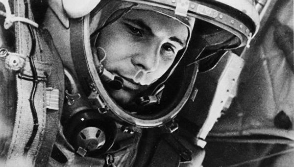

Программа Восток:
Космический корабль из серии "Восток", первый космический аппарат, поднявший человека на околоземную орбиту.
12 Апреля 1961
На корабле "Восток" - летчик-космонавт СССР Юрий Алексеевич Гагарин совершил первый в мире полет в космическое пространство.
.01
Начальник летных отрядов
Юрий Алексеевич Гагарин был очень собранным и целеустремленным человеком, после пелета в космос он не только выполнял множество обязанностей по подготовке к дальнейшим полетам, он помогал готовится космонавтам, которые летали в след за ним, он был начальником первого отряда космонавтов. Он отвечал за всю летную подготовку космонавтов и первого, второго отрядов!
.02
Депутат Верховного Совета
Кроме того, что у Гагарина была масса общественных обязаностей, в частности, он был депутатом Верховного Совета. Он совершенно не формально к этому относился, стараясь помогать всем тем, кто обращался к нему с депутатскими вопросами. Действительно, к нему обращались очень многие, он отвечал всегда на все письма и старался выполнять все эти просьбы. Все это требовало огромных сил, огромной сосредоточенности и хорошего здоровья, энергии.
.03
Увлечения
Первый космонавт Земли Юрий Гагарин, не смотря на невысокий рост, был капитаном любой баскетбольной команды, очень хорошо играл в баскетбол, прекрасно играл в хоккей, очень любил водные лыжи и вообще спорт. Он считал, что занятия спортом - это то, без чего человек существовать не может, он занимался с дестства совершенно различными видами спорта. Занимался рыбалкой и охотой, увлекался различной техникой, в частности, фото - и киноаппаратурой, он с удавольствием разбирал любой аппарат, который попадал к нему в руки.
Гагарин. Первый в космосе